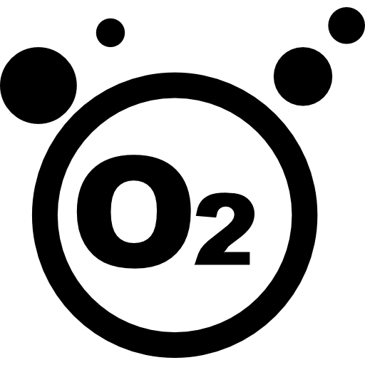

El paisajismo es el arte de planificar, diseñar y mantener áreas verdes, desde jardines residenciales hasta parques públicos. Este proceso implica la utilización de plantas, árboles, arbustos y otros elementos naturales, así como la incorporación de estructuras y materiales artificiales como caminos, fuentes y muebles de exterior. Un paisajista profesional debe considerar diversos factores, incluyendo el clima, el suelo, la topografía y las necesidades del cliente, para crear un espacio equilibrado y armonioso.
La jardinería puede contribuir a la biodiversidad, proporcionando hábitats para aves y otros animales, y ayudando a la polinización.
Las plantas ayudan a filtrar el aire y pueden reducir los niveles de contaminación en el entorno urbano.
Un jardín bien diseñado y mantenido realza la belleza de cualquier propiedad, aumentando su atractivo visual.